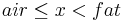
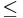
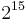
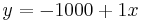
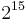
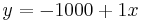
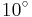

PQCT
| pQCT (ImageJ/Fiji) | |
|---|---|
| Author | Timo Rantalainen |
| Maintainer | |
| Source | on GitHub |
| Initial release | Feb 9th, 2018 |
| Latest version | 3.0.0, Jun 8th, 2018 |
| Development status | stable |
Summary
This package contains tools for Stractec pQCT soft-tissue and bone images. It's designed for the following analyses:
- Conventional bone analyses (e.g. cortical area and volumetric bone mineral density)
- Regional bone mineral density calculations (density distribution1)
- Bone marrow analysis for a tubular bone2
- Conventional soft tissue analyses (e.g. subcutaneous fat cross-sectional area, muscle cross-sectional area)2
Installation
1) Help › Update...
2) Manage update sites
3) Check the box for "PQCT"
4) Close the list
5) Click "Apply changes"
6) Restart Fiji / ImageJ
7) A new sub-directory called pQCT appears under Plugins
8) The update system will now inform you when a new version of the pQCT is available
Distribution analysis
Plugins › pQCT › Distribution Analysis
The main tool for pQCT image analysis. You must open an image first before running this tool.
- Flip horizontal: flips the image horizontally
- Flip vertical: flips the image vertically
- No filtering: prevents 3x3 median filtering of bone and 7x7 filtering of soft tissue.
- Measurement tube: removes the tube used for lower limb measurements with some versions of the XCT3000 measurement device.
- Air threshold: threshold for foreground pixels (all tissue). Pixels with values less than this are considered background.
- Fat threshold: pixels with values  are considered fat tissue.
- Muscle threshold: threshold value for muscle tissue.
- Marrow threshold: separates marrow from bone. Pixels  the threshold within bone area are considered marrow.
- Soft tissue threshold: separates bone from soft-tissue. Pixels
 the threshold are considered soft-tissue.
the threshold are considered soft-tissue.
- Area threshold: separates bone from everything else. Used for total area (ToA) and bmd (ToD) as well as for cortical area (CoA) and SSI and BSId calculations.
- BMD threshold: separates cortical bone from everything else. Used for density distribution and cortical density (CoD) analyses.
- Scaling coefficient: Used as the coefficient to scale the raw integer values read from the image file into BMD values , i.e. the raw-value term
 in
in  (N.B. in case of Stratec files a value of  is subtracted prior to applying the scaling to account for the fact that the values were stored as 16-bit signed integers , while ImageJ uses 16-bit unsigned integers. Also, the scaling is retrieved from a list of Stratec .TYP-files according to the image header information. In case of DICOM-files, the DICOM scaling (typically ) is applied prior to applying this scaling.).
(N.B. in case of Stratec files a value of  is subtracted prior to applying the scaling to account for the fact that the values were stored as 16-bit signed integers , while ImageJ uses 16-bit unsigned integers. Also, the scaling is retrieved from a list of Stratec .TYP-files according to the image header information. In case of DICOM-files, the DICOM scaling (typically ) is applied prior to applying this scaling.).
- Scaling constant: Used as the constant in scaling the raw integer values read from the image file into BMD values, i.e. term
 in .
in .
- ROI selection: Chooses which bone is analysed. Results are always produced for one bone at a time.
- Soft Tissue ROI selection: Used to define, which soft tissue area is analysed. Results are always produced for one soft tissue area at a time.
- Rotation selection: Used to define, how the mass distribution, concentric density distribution and density distribution results are aligned.
- Analyse cortical results: Whether (ticked) or not to analyse ToA, ToD, SSI, CoA, CoD and BSId.
- Analyse mass distribution: Whether (ticked) or not to analyse mass distribution.
- Analyse concentric density distribution: Whether (ticked) or not to analyse concentric density distribution. Useful for e.g. distal bone without medullary cavity. Analyses density distribution in 10 anatomical concentric rings starting from the center of the bone area.
- Analyse density distribution: Whether (ticked) or not to analyse density distribution. N.B. will not produce meaningful results for bones without medullary cavity.
- Analyse soft tissues: Whether (ticked) or not to analyse soft tissues.
- Prevent peeling PVE pixels: Whether (ticked) or not to prevent peeling outermost and innermost layer of pixels in density distribution analysis. Useful e.g. for enabling analysis in subjects with thin cortices. N.B. having included PVE pixels should be kept in mind while interpreting the results!
- Allow cleaving: Used to separate bone/soft tissue areas, which are connected with a narrow struct. Cleaving is made by looking at the ratios of distances between two points along the edge and the shortest distance between the points. If the maximum of the ratio is high enough, the highest ratio points will be connected with a straight line and one of the resulting edges will be discarded. E.g. for a circle, the maximum ratio is
 and for a square it's
and for a square it's  .
.
- Suppress result image: The analysis pops up a result image, which may be suppressed by ticking this box. Useful e.g. for batch processing.
- Limit ROI search to manually selected: If ticked, only manually delineated ROI will be searched for a bone and soft tissue (The ROI selected with ImageJ ROI tools prior to executing the Distribution Analysis is used).
- Set distribution results rotation manually: If ticked, the density distribution results will be rotated according to the value given in the text box below.
- Manual rotation: If the box above is ticked, the density distribution results will be rotated according to the degree value given here (useful, e.g. when the automatic rotation fails).
- Guess flip: If ticked, will allow trying to guess whether results need to be flipped.
- Guess right: If ticked, will try to guess whether results need to be flipped. If selected bone is closer to image left/upper border (Stacked not ticked or ticked, respectively), the results are not flipped.
- Guess larger: If ticked, will try to guess whether results need to be flipped. If larger bone is closer to image left/upper border (Stacked not ticked or ticked, respectively), the results are not flipped.
- Stacked bones: Used only if guess right or guess larger is ticked. Stacked means that the bones are expected to be on top of each other in the image (e.g. tibial mid-shaft in Stratec images).
- Guess stacked: Used only if guess right or guess larger is ticked. Tries to guess whether the bones are stacked. The default guess is not, but if the y-axis distance of the centers of the two largest bones differs by more than 1.1 time the x-axis distance, the bones are considered stacked.
- Invert flip guess: If ticked will invert the flip guess made by guess right or guess larger. Useful for e.g. analyzing two bones from the same image in order to align the distribution results similarly.
- Flip distribution results: If ticked, the distribution results will be flipped to a mirror image. Useful for e.g. comparing left to right leg.
- Save visual result image on disk: If ticked, will save visual result image on disk into the path given in the text box below. Useful e.g. for batch processing, allowing visual inspection of the results after running the batch.
- Image save path: If the above check box is ticked, the path given in this text box is used as the path into which the visual result images are saved to, i.e. c:/path/to/save/to/. remember to add the trailing /. Either / or \ may be used in the path.
Distribution analysis results
Alignment
- Endo- and pericortical radii, and endo-, mid- and pericortical densities are produced for each  sector.
- The sector from
 to always opens directly to right in the visual result image.
to always opens directly to right in the visual result image. - Sectors increase into clockwise direction in the visual results image, or counter clockwise, if results are flipped.
- If you have selected flip distribution results, the sectors are still the same, but you will notice that the visual distribution result has been mirrored about the horizontal axis. This flipping is implemented by reversing the distribution results vectors and by making sure that the sector from to remains the same.
- The color of the line used to delineate the endo- and pericortical border indicates in which direction the sector angle increases. is blue and
 is green/red.
is green/red. - In addition, the original and rotated x- and y- axes are highlighted in the visual image (the origin of which is the origin of the distribution results). The axes extend from origin towards positive coordinate values, green/cyan x-axis and blue/purple y-axis.
- If you have selected flip distribution results, the sectors are still the same, but you will notice that the visual distribution result has been mirrored about the horizontal axis. This flipping is implemented by reversing the distribution results vectors and by making sure that the sector from
Result headings
- Alpha [deg]
- how many degrees were the results rotated
- Rotation correction [deg]
- correction for centering sector 0
- Distance between bones[mm]
- distance between the center of bone areas for two bones
- MuD [mg/cm³]
- muscle density (including possible intramuscular fat)
- MuA [cm²]
- muscle area (including possible intramuscular fat)
- LeanMuD [mg/cm³]
- muscle density (excluding possible intramuscular fat)
- LeanMuA [cm²]
- muscle area (excluding possible intramuscular fat)
- IntraFatD [mg/cm³]
- intramuscular fat density
- IntraFatA [cm²]
- intramuscular fat area
- FatD [mg/cm³]
- total fat density (both intramuscular and subcutaneous)
- FatA [cm²]
- total fat area (both intramuscular and subcutaneous)
- SubCutFatD [mg/cm³]
- subcutaneous fat density
- SubCutFatA [cm²]
- subcutaneous fat area
- LimbD [mg/cm³]
- limb density (including bones)
- LimbA [cm²]
- limb area (including bones)
- Density weighted fat percentage [%]
- percentage of fat from the total
- MaMassD [g/cm³]
- marrow mass density converted from hydroxyapatite equivalent densities (HA). Works for CT, where water is given a HA value of zero
- StratecMaMassD [g/cm³]
- marrow mass density converted from hydroxyapatite equivalent densities (HA) to mass density. Works for Stratec pQCT, where fat is given a HA value of 0
- MaD [mg/cm³]
- marrow density
- MaA [mm²]
- area included into the marrow analysis (N.B. != MeA)
- CoD [mg/cm³]
- cortical density
- CoA [mm²]
- cortical area
- Stratec CoD [mg/cm³]
- cortical density (pixels need not be contiguous as in the analyses conducted by Stratec software. However, if pixels aren't contiguous, incorrect ROI is typically defined automatically by the plug-in and the analysis will fail)
- Stratec CoA [mm²]
- cortical area (pixels need not be contiguous as in the analyses conducted by Stratec software. However, if pixels aren't contiguous, incorrect ROI is typically defined automatically by the plug-in and the analysis will fail)
- SSI [mm³]
- Strength strain index (= density weighted section modulus)
- SSImax [mm³]
- Maximal strength strain index
- SSImin [mm³]
- Minimal strength strain index
- IPo [mm4]
- Polar second moment of area (=polar cross-sectional moment of inertia)
- Imax [mm4]
- Maximal second moment of area (=maximal cross-sectional moment of inertia)
- Imin [mm4]
- minimal second moment of area (=minimal cross-sectional moment of inertia
- dwIPo [mg/cm]
- density weighted polar second moment of area (=polar cross-sectional moment of inertia)
- dwImax [mg/cm]
- density weighted maximal second moment of area (=maximal cross-sectional moment of inertia)
- dwImin [mg/cm]
- density weighted minimal second moment of area (=minimal cross-sectional moment of inertia
- ToD [mg/cm³]
- total density
- ToA[mm²]
- total area
- MeA [mm²]
- non-cortical area (= ToA - CoA)
- BSId[g²/cm4]
- compressive strength index (=ToD²*ToA)
Interpretation
Polar distribution
The mean of the three radial divisions within a given sector is reported as the density of that sector. Applies to:
- 0° - 10° ... 350° - 360° mineral mass [mg]
- Polar sector #0 ... #35 vBMD [mg/cm³]
Radial distribution
The mean of the thirty six 10° sectors within a given anatomical ring is reported as the density of that ring. Applies to:
- Radial division #0 ... #2 vBMD [mg/cm³]
Polar and radial distribution
- Combination of the two above
- Division X sector 0° - 10° ... 350° - 360° vBMD [mg/cm³]
- 0° - 10° ... 350° - 360° endo/mid/pericortical vBMD [mg/cm³]
Radii distribution
- 0° - 10° ... 350° - 360° concentric analysis pericortical radius [mm]
- 0° - 10° ... 350° - 360° endo/pericortical radius [mm]
Endo- and pericortical radii are given as the distance from the centroid of the marrow cavity to the endo- and pericortical border, respectively. The radii are calculated prior to peeling off the layers of pixels from endosteal and periosteal border.
Export Stratec Header
Plugins › pQCT › Export Stratec Header
Displays the metadata saved in the pQCT image currently open.
Strip Stracted Header
Plugins › pQCT › Export Stratec Header
Can be used to save a new version of the given image file, where selected metadata fields have been stripped.
Read Stratec File
Plugins › pQCT › Export Stratec Header
Use this plug-in to open Stratec pQCT images. NB File › Open or dragging the file doesn't work.
Test images
You can download the package that contains test images for the analyses. The source to produce the synthetic data and the expected results are also included.
To easily run the test, use the provided macro. Instructions:
- Prepare the .ijm macro file before the first time you run it
- Open SyntheticDataTest.ijm
- Change the paths on line 2 and 3 to ones that match your computer, e.g.: line 2: sourceDir = C:/your/path/to/synthetic/images/. line 3: visualDir = C:/your/path/to/visual/results/. Remember the trailing "/" characters. N.B. The paths need to exist prior to executing the macro. In addition, windows operating system does not seem to work if the path contains spaces. If you are working with windows and do have spaces in your path, replace the / with \\.
- Save the .ijm file
- Open Fiji / ImageJ
- Plugins › Macros › Run
- Find your .ijm file
- When the macro has finished, you should see the Results table
- Open the resulting file with excel or open office or some other suitable program and the results should match the ones within the Synthetic data provided above.
BoneJ and pQCT
BoneJ and pQCT are separating. If you install pQCT from the update site as described above, you won't need BoneJ. The former is still included in JAR available at bonej.org, but they will become completely independent. In the meanwhile, please don't install both pQCT from the update site, and the BoneJ JAR.
Citation
If you use this program, or the Stratec pQCT file format reader in your work, please cite the pertinent papers.
- Rantalainen T, Nikander R, Heinonen A, Daly RM, Sievanen H, An open source approach for regional cortical bone mineral density analysis, J. Musculoskelet. Neuronal Interact, 2011 Sep 11(3), 243-8.
- Rantalainen T, Nikander R, Heinonen A, Cervinka T, Sievanen H, Daly RM, Differential Effects of Exercise on Tibial shaft Marrow Density in Young Female Athletes, J. Clin. Endocrinol. Metab.
Acknowledgements
Stratec Medizintechnik GmbH (Pforzheim, Germany) for providing the file specification and calibration files used in their XCT pQCT-devices.